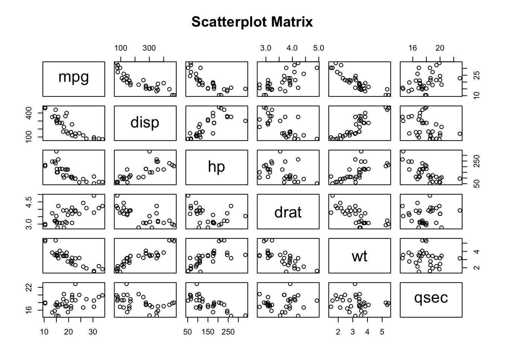

22 Correlation and Covariance Matrices
22.1 Introduction to Correlation and Covariance Matrices
A prominent theme in statistical analysis is evaluating whether or not a relationship exists between two or more variables, and the degree to which that relationship exists.
-
Covariance measures the degree to which the deviation of one variable (\(X\)) from its mean changes in relation to the deviation of another variable (\(Y\)) from its mean. In other words, covariance measures the joint variability of two random variables or how these increase or decrease in relation with each other.
- For instance, if greater values of one variable tend to correspond with greater values of another variable, this suggests a positive covariance.
- Covariance can have both positive and negative values.
- A covariance of zero indicates that the variables are independent of each other, meaning that there is no linear relationship between them.
- A Covariance Matrix shows the covariance between different variables of a data set. Covariance matrices are helpful for:
- Characterizing multivariate normal distributions.
- Dimensionality reduction techniques, such as Principal Component Analysis, where the matrix is used to calculate the principal components (i.e., linear combinations of the original variables that capture the maximum variance in the data).
- Machine learning models, like Gaussian mixture models, where they are used to estimate the parameters of the model.
-
Correlation tells us both the strength and the direction of the relationship between two variables by listing the Correlation Coefficient or \(r\) (“Pearson”, “Spearman”, or “Kendall”) for the pair as measure of association.
- Correlation differs from covariance in that it is standardized between -1 and 1, making it easier to interpret.
- A correlation of -1 indicates a perfect negative linear relationship between two variables, and a correlation of 1 indicates a perfect positive linear relationship between two variables.
- A correlation of 0 indicates no correlation.
- The magnitude of the correlation coefficient indicates the strength of the association:
- .1 < \(r\) < .3 (small / weak correlation).
- .3 < \(r\) < .5 (medium / moderate correlation).
- .5 < \(r\) (large / strong correlation).
- Correlation is helpful to test for multicollinarity in regression models.
- A Correlation matrix allows for the exploration of the correlation among the multiple variables in a data set simultaneously. It provides this information through a table listing the correlation coefficients (\(r\)) for each pair of variables in the data set.
22.2 Mathematical Definition
22.2.1 Variance
The equation for the variance of a single variable is as follows: \[ var(x) = \frac{1}{n-1}{\sum_{i = 1}^{n}{(x_i - \bar{x})^2}} \]
22.2.2 Covariance
For a sample of \(n\) data points, the sample covariance is calculated as: \[ Cov(x,y) = \frac{1}{n-1}{\sum_{i = 1}^{n}{(x_i - \bar{x})(y_i-\bar{y})}} \] Where,
- \(x_i\) denotes all the possible values of x.
- \(y_i\) denotes all the possible values of y.
- \(\bar{x}\) denotes the mean of variable x.
- \(\bar{y}\) denotes the mean of variable y.
- \(n\) denotes the sample size.
22.2.2.1 Covariance Matrix
The covariance matrix, \(\sum\), can be represented as: \[ \sum = \begin{bmatrix} Var(x_{1}) & ... & Cov(x_{1},x_{n})\\ : &: & :\\ :& :& :\\ Cov(x_{n},x_{1}) & ... & Var(x_{n}) \end{bmatrix}. \] Where,
- \(x_1\) is the first variable of interest in the data set.
- Up to the last variable of interest in the data set, \(x_n\).
22.2.3 Correlation
Here is a simplified equation for the Pearson Correlation Coefficient, \(r\) that allows us to see the relationship between correlation and covariance: \[ r = \frac {Cov(x,y)}{(\sqrt{var(x)})(\sqrt{var(y)})} \] This video explains the standardization and mathematical properties of \(r\):
22.2.3.1 Correlation Matrix
Here is an example of a correlation matrix:
| Variable 1 | Variable 2 | … | Variable n | |
|---|---|---|---|---|
| Variable 1 | 1.00 | \(r_{12}\) | … | \(r_{1n}\) |
| Variable 2 | \(r_{21}\) | 1.00 | … | \(r_{2n}\) |
| … | … | … | … | … |
| Variable n | \(r_{n1}\) | \(r_{n2}\) | … | 1.00 |
Where,
- The diagonal elements are always 1, because it represents the correlation of each variable with itself.
- The off-diagonal elements represent the correlation coefficients between pairs of variables. For example \(r_{12}\) represents the correlation between Variable 1 and Variable 2.
- The correlation is symmetric, meaning that the correlation between Variable 1 and Variable 2 is the same as the correlation between Variable 2 and Variable 1.
22.3 Data Description
We utilized the R data set mtcars to provide examples for developing a Covariance Matrix and checking the assumptions for/development of a Correlation Matrix using the pearson correlation coefficient.
mtcars is a data set that belongs to base R that contains data about the various models of cars. It contains measurement from 32 different automobiles (1,973,074 models). The variable in the mtcars data set are:
- mpg: Miles/(US) gallon.
- cyl: Number of cylinders.
- disp: Displacement (cu.in.).
- hp: Gross horsepower.
- drat: Rear axle ratio.
- wt: Weight (1000 lbs).
- qsec: 1/4 mile time.
- vs: V/S (0 = V-shaped engine, 1 = straight engine).
- am: Transmission (0 = automatic, 1 = manual).
- gear: Number of forward gears.
- carb: Number of carburetors.
# Load data
data("mtcars")
# Print sample
head(mtcars) %>%
kable(
format = "markdown",
digits = 2,
caption = "The `mtcars` data set"
)| mpg | cyl | disp | hp | drat | wt | qsec | vs | am | gear | carb | |
|---|---|---|---|---|---|---|---|---|---|---|---|
| Mazda RX4 | 21.0 | 6 | 160 | 110 | 3.90 | 2.62 | 16.46 | 0 | 1 | 4 | 4 |
| Mazda RX4 Wag | 21.0 | 6 | 160 | 110 | 3.90 | 2.88 | 17.02 | 0 | 1 | 4 | 4 |
| Datsun 710 | 22.8 | 4 | 108 | 93 | 3.85 | 2.32 | 18.61 | 1 | 1 | 4 | 1 |
| Hornet 4 Drive | 21.4 | 6 | 258 | 110 | 3.08 | 3.21 | 19.44 | 1 | 0 | 3 | 1 |
| Hornet Sportabout | 18.7 | 8 | 360 | 175 | 3.15 | 3.44 | 17.02 | 0 | 0 | 3 | 2 |
| Valiant | 18.1 | 6 | 225 | 105 | 2.76 | 3.46 | 20.22 | 1 | 0 | 3 | 1 |
22.4 Assumptions
22.4.1 Covariance Assumptions
Because the covariance measures the degree to which two variables change together, the following assumptions should be met:
- Linearity: The relationship between the two variables should be linear.
-
Scale: Covariance is sensitive to the units of measurement, so variables should be measured on interval or ratio scale if possible.
- An interval scale means that there are equal intervals between points on the scale (e.g., temperature in Celsius and Fahrenheit).
- A ratio scale is an interval scale with a true/absolute zero point (e.g., time in minutes, height and weight).
- Mean centered data: Covariance is based on deviations from the mean, so for accurate calculations the data should be mean centered.
- Outliers: There should be no outliers, or outliers should be handled prior to interpreting results.
22.4.2 Correlation Assumptions
Correlation examines the strength and direction of a linear relationship between 2 variables. As such, the following assumptions should be met:
- Linearity: Correlation can underestimate the strength of a relationship if the relationship between variables is non-linear.
- Scale: Like covariance, correlation assumes interval or ratio scale for valid results.
-
Homoscedasticity: The range or spread of one variable should be consistent across the range of the second variable.
- This assumption is only relevant for Pearson Correlation. Spearman Rank Correlation and Kendall’s Tau do not assume homoscedasticity.
-
Normality: For hypothesis testing, the variables should be approximately normally distributed.
- This assumption is only relevant for Pearson Correlation. Spearman Rank Correlation and Kendall’s Tau do not assume normality.
- Independence: Each pair of observations/variables should be independent of other pairs (e.g., you should not have repeated measures, clustered data, or time series data).
- Outliers: There should be no outliers, or outliers should be handled prior to interpreting results.
22.5 Checking the Assumptions
22.5.1 Linearity
We can check this assumption with scatterplots of the continuous data.
# The pairs function creates a scatterplot matrix for all continuous variables
pairs(
# Notice that all continuous variables come after the tilde (~)
~ mpg + disp + hp + drat + wt + qsec,
data = mtcars,
main = "Scatterplot Matrix"
)
From this visualization, it appears that the continuous variables have a linear relationship (whether negative or positive).
22.5.2 Scale
Using the skimr package along with the help (?) function, we can quickly get information about all of the variables in mtcars to understand what kind of scale the variables are on.
skim(mtcars)| Name | mtcars |
| Number of rows | 32 |
| Number of columns | 11 |
| _______________________ | |
| Column type frequency: | |
| numeric | 11 |
| ________________________ | |
| Group variables | None |
Variable type: numeric
| skim_variable | n_missing | complete_rate | mean | sd | p0 | p25 | p50 | p75 | p100 | hist |
|---|---|---|---|---|---|---|---|---|---|---|
| mpg | 0 | 1 | 20.09 | 6.03 | 10.40 | 15.43 | 19.20 | 22.80 | 33.90 | ▃▇▅▁▂ |
| cyl | 0 | 1 | 6.19 | 1.79 | 4.00 | 4.00 | 6.00 | 8.00 | 8.00 | ▆▁▃▁▇ |
| disp | 0 | 1 | 230.72 | 123.94 | 71.10 | 120.83 | 196.30 | 326.00 | 472.00 | ▇▃▃▃▂ |
| hp | 0 | 1 | 146.69 | 68.56 | 52.00 | 96.50 | 123.00 | 180.00 | 335.00 | ▇▇▆▃▁ |
| drat | 0 | 1 | 3.60 | 0.53 | 2.76 | 3.08 | 3.70 | 3.92 | 4.93 | ▇▃▇▅▁ |
| wt | 0 | 1 | 3.22 | 0.98 | 1.51 | 2.58 | 3.33 | 3.61 | 5.42 | ▃▃▇▁▂ |
| qsec | 0 | 1 | 17.85 | 1.79 | 14.50 | 16.89 | 17.71 | 18.90 | 22.90 | ▃▇▇▂▁ |
| vs | 0 | 1 | 0.44 | 0.50 | 0.00 | 0.00 | 0.00 | 1.00 | 1.00 | ▇▁▁▁▆ |
| am | 0 | 1 | 0.41 | 0.50 | 0.00 | 0.00 | 0.00 | 1.00 | 1.00 | ▇▁▁▁▆ |
| gear | 0 | 1 | 3.69 | 0.74 | 3.00 | 3.00 | 4.00 | 4.00 | 5.00 | ▇▁▆▁▂ |
| carb | 0 | 1 | 2.81 | 1.62 | 1.00 | 2.00 | 2.00 | 4.00 | 8.00 | ▇▂▅▁▁ |
# # Checking the help file for mtcars
# ?mtcarsAs we mentioned previously in the description of the data, only 6 variables (mpg, disp, hp, drat, wt, and qsec) are interval or ratio values.
22.5.3 Outliers
To check for outliers in our variables of interest, we can use a box plot to visually examine the data.
box_mpg <- ggplot(mtcars) +
aes(y = mpg) +
geom_boxplot()
box_disp <- ggplot(mtcars) +
aes(y = disp) +
geom_boxplot()
box_hp <- ggplot(mtcars) +
aes(y = hp) +
geom_boxplot()
box_drat <- ggplot(mtcars) +
aes(y = drat) +
geom_boxplot()
box_wt <- ggplot(mtcars) +
aes(y = wt) +
geom_boxplot()
box_qsec <- ggplot(mtcars) +
aes(y = qsec) +
geom_boxplot()
box_mpg + box_disp + box_hp + box_drat + box_wt + box_qsecmpg, hp, wt, and qsec all appear to have some outliers.
22.5.4 Homoscedasticity
To check the homoscedasticity (or homogeneity of variance) assumption for correlations, we can examine resdiual plots from linear models after conducting hypothesis testing. We can also look back at the box plots (Figure 22.1) to check if the interquartile range of the variables looks approximately the same. All of the variables of interest, except for disp appear to have similar variances.
22.5.5 Normality
To check this assumption, we can examine if the data are approximately normally distributed using the Q-Q plot or histograms or with the Shapiro-Wilk test.
First, we will look at the Q-Q plot:
# Normality assumption: Q-Q plot
qq_mpg <- ggplot(mtcars) +
aes(sample = mpg) +
stat_qq() +
stat_qq_line() +
ggtitle("mpg")
qq_disp <- ggplot(mtcars) +
aes(sample = disp) +
stat_qq() +
stat_qq_line() +
ggtitle("disp")
qq_hp <- ggplot(mtcars) +
aes(sample = hp) +
stat_qq() +
stat_qq_line() +
ggtitle("hp")
qq_drat <- ggplot(mtcars) +
aes(sample = drat) +
stat_qq() +
stat_qq_line() +
ggtitle("drat")
qq_wt <- ggplot(mtcars) +
aes(sample = wt) +
stat_qq() +
stat_qq_line() +
ggtitle("wt")
qq_qsec <- ggplot(mtcars) +
aes(sample = qsec) +
stat_qq() +
stat_qq_line() +
ggtitle("qsec")
qq_mpg + qq_disp + qq_hp + qq_drat + qq_wt + qq_qsecAll of the variables seem to be approximately normally distributed.
Next, we will look at histograms:
# Normality assumption: Histograms
histogram_mpg <- ggplot(mtcars) +
aes(x = mpg) +
geom_histogram(binwidth = 0.5)
histogram_disp <- ggplot(mtcars) +
aes(x = disp) +
geom_histogram(binwidth = 1)
histogram_hp <- ggplot(mtcars) +
aes(x = hp) +
geom_histogram(binwidth = 1)
histogram_drat <- ggplot(mtcars) +
aes(x = drat) +
geom_histogram(binwidth = 0.5)
histogram_wt <- ggplot(mtcars) +
aes(x = wt) +
geom_histogram(binwidth = 0.5)
histogram_qsec <- ggplot(mtcars) +
aes(x = qsec) +
geom_histogram(binwidth = 0.5)
histogram_mpg + histogram_disp + histogram_hp + histogram_drat +
histogram_wt + histogram_qsecHere, it appears that wt and possibly qsec, disp, and hp appear to be approximately normally distributed.
Lastly, we can use the Shapiro-Wilk test to test if the data is approximately normally distributed. P-values greater than 0.05 indicate that the data is likely approximately normally distributed.
# Normality: Shapiro Wilks
shapiro_mpg <- mtcars %>%
summarise(
statistic = shapiro.test(mpg)$statistic,
p.value = shapiro.test(mpg)$p.value
)
shapiro_mpg statistic p.value
1 0.9475647 0.1228814shapiro_disp <- mtcars %>%
summarise(
statistic = shapiro.test(disp)$statistic,
p.value = shapiro.test(disp)$p.value
)
shapiro_disp statistic p.value
1 0.9200127 0.02080657shapiro_hp <- mtcars %>%
summarise(
statistic = shapiro.test(hp)$statistic,
p.value = shapiro.test(hp)$p.value
)
shapiro_hp statistic p.value
1 0.9334193 0.04880824shapiro_drat <- mtcars %>%
summarise(
statistic = shapiro.test(drat)$statistic,
p.value = shapiro.test(drat)$p.value
)
shapiro_drat statistic p.value
1 0.9458839 0.1100608shapiro_wt <- mtcars %>%
summarise(
statistic = shapiro.test(wt)$statistic,
p.value = shapiro.test(wt)$p.value
)
shapiro_wt statistic p.value
1 0.9432577 0.09265499shapiro_qsec <- mtcars %>%
summarise(
statistic = shapiro.test(qsec)$statistic,
p.value = shapiro.test(qsec)$p.value
)
shapiro_qsec statistic p.value
1 0.9732509 0.5935176From these outputs, we can see that disp and hp are the only variables with a p-value less than 0.05, indicating that they are likely not approximately normally distributed.
If the normality assumption is not satisfied, it is recommended to use non-parametric correlation, including Spearman Rank Correlation and Kendall’s Tau tests, which will be discussed later.
22.6 Code to Run
22.6.1 Covariance
As with correlation, we can use the cov() to calculate covariance, where the three same methods are available dependent on the validity of assumptions.
# cov(dataName$variable1, dataName$variable2)
cov_result <- cov(mtcars$mpg, mtcars$drat)
print(cov_result)[1] 2.195064The resulting covariance from mpg and drat is 2.195064. We can also use cov() to create a matrix. However, the data must be manipulated to become a square matrix.
# We select the six continuous variables within the `mtcars` data set and save
# into our matrix object.
dataMatrix <- mtcars[, c(1, 3:7)]
# We save the output to an object for later.
covOutput <- cov(dataMatrix)
print(covOutput) mpg disp hp drat wt qsec
mpg 36.324103 -633.09721 -320.73206 2.19506351 -5.1166847 4.50914919
disp -633.097208 15360.79983 6721.15867 -47.06401915 107.6842040 -96.05168145
hp -320.732056 6721.15867 4700.86694 -16.45110887 44.1926613 -86.77008065
drat 2.195064 -47.06402 -16.45111 0.28588135 -0.3727207 0.08714073
wt -5.116685 107.68420 44.19266 -0.37272073 0.9573790 -0.30548161
qsec 4.509149 -96.05168 -86.77008 0.08714073 -0.3054816 3.19316613The resulting output is the calculated covariances among all the variables specified. The Covariance can take any value from -\(\infty\) to \(\infty\).
We can also scale the covariance matrix into a corresponding correlation matrix.
cov2cor(covOutput) mpg disp hp drat wt qsec
mpg 1.0000000 -0.8475514 -0.7761684 0.68117191 -0.8676594 0.41868403
disp -0.8475514 1.0000000 0.7909486 -0.71021393 0.8879799 -0.43369788
hp -0.7761684 0.7909486 1.0000000 -0.44875912 0.6587479 -0.70822339
drat 0.6811719 -0.7102139 -0.4487591 1.00000000 -0.7124406 0.09120476
wt -0.8676594 0.8879799 0.6587479 -0.71244065 1.0000000 -0.17471588
qsec 0.4186840 -0.4336979 -0.7082234 0.09120476 -0.1747159 1.00000000This defaults to Pearson Correlation so should be interpreted with caution in the case of variables that do not meet the proper assumptions.
22.6.2 Correlation
Correlation can be calculated using: cor(), which calculates the correlation coefficient or cor.test(), which tests for the association (or correlation) between paired samples.
Three different methods are available when using cor(), either pearson (which is default if none is specified), kendall, or spearman. Let’s run cor() on the variables that satisfied our assumptions: mpg, drat, wt, and qsec.
# cor(dataName$variable1, dataName$variable2, method = "methodName")
# Pearson is the default, and does not need to be specified. However, for
# completeness is specified below.
corrPearson <- cor.test(mtcars$mpg, mtcars$drat, method = "pearson")
print(corrPearson)
Pearson's product-moment correlation
data: mtcars$mpg and mtcars$drat
t = 5.096, df = 30, p-value = 1.776e-05
alternative hypothesis: true correlation is not equal to 0
95 percent confidence interval:
0.4360484 0.8322010
sample estimates:
cor
0.6811719 In the output, the following is included:
-
Correlation Method:
Pearson's Product-Moment Correlation -
Data:
mtcars$mpgandmtcars$drat -
t, which represents the t-test statistic: 5.096. -
df, which represents the degrees of freedom: 30 (n - 2). -
alternative hypothesis, where true correlation is not equal to 0. Therefore, the null hypothesis states true correlation is equal to 0. -
p-value, which is the significance level of the t-test (1.776e-05) and the probability of this correlation if the null hypothesis were true. -
95% confidence intervalorconf.int, where we are 95% confidence that the true correlation coefficient lies between [0.4360484, 0.8322010]. -
sample estimatesprovides the calculated value of the correlation coefficient: 0.6811719.
The following will illustrate the output from a cor.test with kendall specified as the method, or known as the Kendall Rank Correlation Coefficient. This is typically used if the data does not satisfy the normality assumption, so we will utilize the variables: mpg and disp, where disp did not satisfy our normality assumption as indicated by the Shapiro-Wilks test.
corrKendall <- cor.test(mtcars$mpg, mtcars$disp, method = "kendall")Warning in cor.test.default(mtcars$mpg, mtcars$disp, method = "kendall"):
Cannot compute exact p-value with tiesprint(corrKendall)
Kendall's rank correlation tau
data: mtcars$mpg and mtcars$disp
z = -6.1083, p-value = 1.007e-09
alternative hypothesis: true tau is not equal to 0
sample estimates:
tau
-0.7681311 Similar information is provided as with the Pearson method, where the type of correlation test and alternative hypothesis is specified. However, in this non-parametric test, we are provided the z-statistic accompanied by the resulting p-value (1.007e-09). The sample estimates also provides us with the Kendall correlation coefficient (also known as tau): -0.7681311.
corrSpearman <- cor.test(mtcars$mpg, mtcars$disp, method = "spearman")Warning in cor.test.default(mtcars$mpg, mtcars$disp, method = "spearman"):
Cannot compute exact p-value with tiesprint(corrSpearman)
Spearman's rank correlation rho
data: mtcars$mpg and mtcars$disp
S = 10415, p-value = 6.37e-13
alternative hypothesis: true rho is not equal to 0
sample estimates:
rho
-0.9088824 Similar to both outputs above, the output from Spearman’s rank method displays the type of correlation test, the variables being tested, alternative hypothesis, as well as the S test statistic and associated p-value (6.37e-13). The sample estimate also provides us with the Spearman’s correlation coefficient (also known as rho): -0.9088824.
22.7 Brief Interpretation of the Output
22.7.1 Interpreting the Covariance
From our Covariance Matrix, the covariance between mpg and drat is 2.195064. A positive covariance indicates that when mpg is high, drat also tends to be high. The covariance between mpg and disp is -633.097208. A negative covariance indicates that when mpg is high, disp tends to be low (vice versa).
22.7.2 Interpreting Correlation Coefficients
- -1 indicates a strong negative correlation: Each time x increases, y decreases.
- 0 means that there is no association between the two variables (x and y).
- +1 indicates a strong positive correlation: Each time x increases, y increases.
For the Pearson correlation, the resulting p-value was 1.776e-05, which is less than our significance level alpha of 0.05. Therefore, the data provides sufficient evidence to suggest that mpg and drat are significantly correlated (0.6811719). Each time mpg increases, drat increases.
For the Kendall’s Tau test, the resulting p-value was 1.007e-09, which is less than our significance level alpha of 0.05. Therefore, the data provides sufficient evidence to suggest that mpg and disp are significantly correlated (-0.7681311). Each time mpg increases, disp decreases.
For the Spearman Rank correlation, the resulting p-value was 6.37e-13, which is less than our significance level alpha of 0.05. Therefore, the data provides sufficient evidence to suggest that mpg and disp are significantly correlated (-0.9088824). Each time mpg increases, disp decreases significantly (illustrates a strong relationship as it is close to -1).